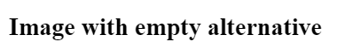
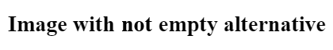

Dernière version du site à date du 12 mai 2017
Tanaguru Marker
See Tanaguru read the doc about marker
- data-table
- identified data table
- presentation-table
- identified presentation table
- complex-data-table
- identified complex data table
- decorative-image
- identified decorative image
- informative-image
- identified informative image
Image with empty alternative
Image with not empty alternative
Image button with not empty alternative
Image without alternative

Image link without alternative

Image button without alternative
Image with an alternative equal to src

Hidden Image without alternative
Hidden Image link without alternative